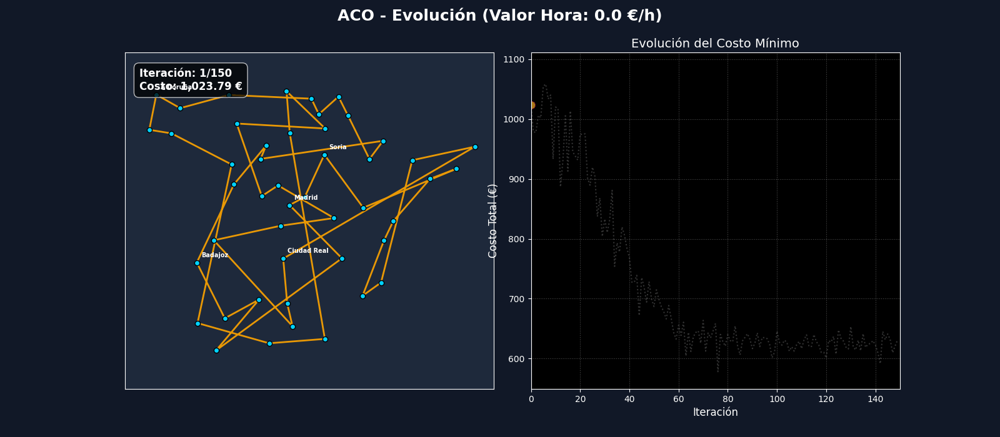
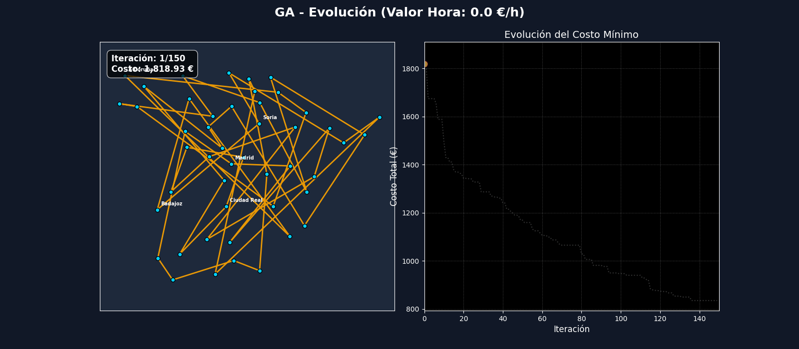
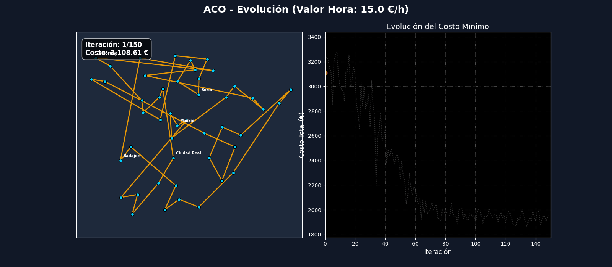
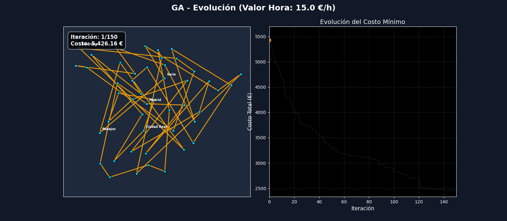
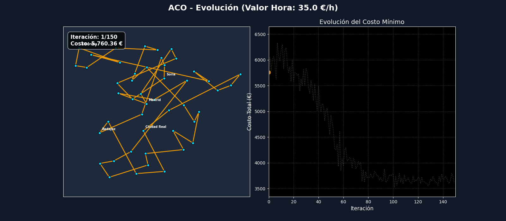
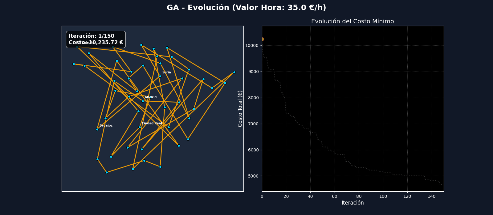
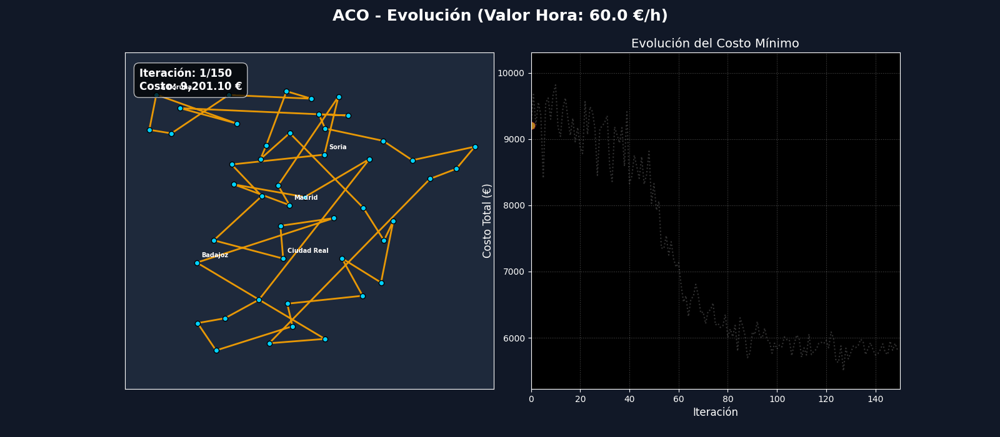
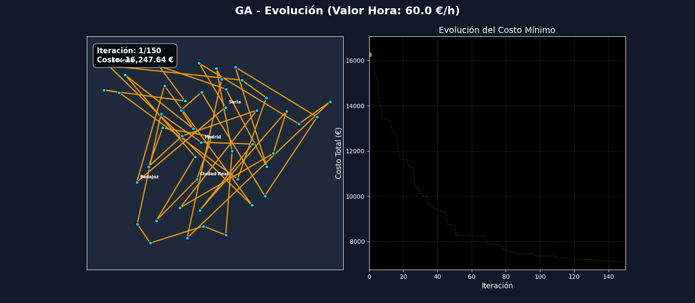
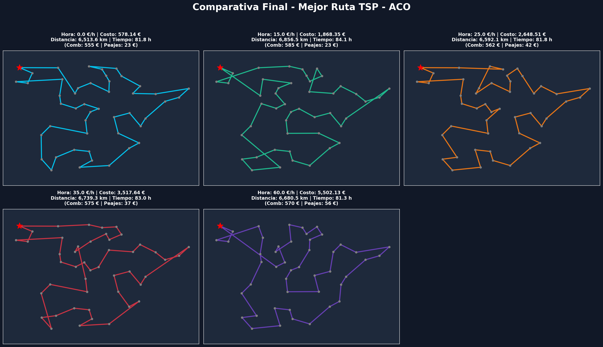
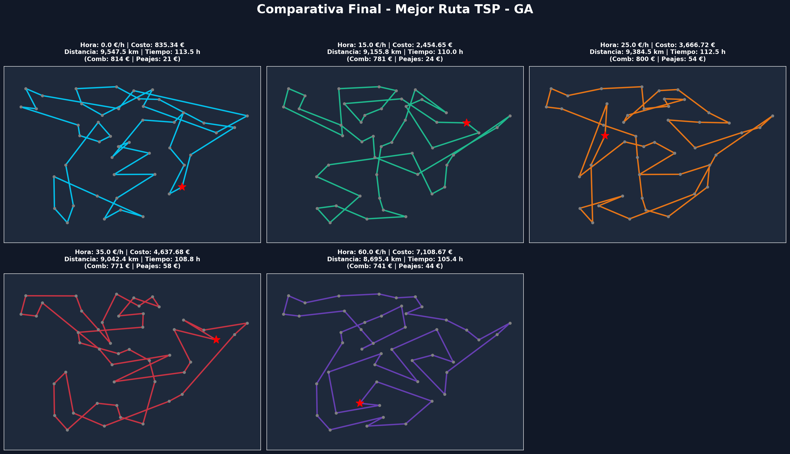

Optimización numérica, metaheurística y combinatoria: descenso por gradiente frente a algoritmos evolutivos, enjambres de partículas y evolución diferencial en funciones de prueba continuas, y colonias de hormigas frente a algoritmos genéticos en un recorrido real por España.
Este trabajo compara métodos de optimización que usan el gradiente con métodos metaheurísticos que solo evalúan la función objetivo. La comparación se hace primero sobre dos funciones de prueba continuas, Schwefel y Rosenbrock, en dos y tres dimensiones, y después sobre un problema combinatorio real: recorrer en carro las 47 capitales de provincia de la España peninsular al menor costo posible.
En la parte continua, cada método se ejecutó 30 veces por función y dimensión, y el esfuerzo se midió en evaluaciones equivalentes de \(f\), contando un gradiente como \(2d\) evaluaciones de la función. El descenso por gradiente fue el método más barato en Schwefel, pero acertó el mínimo global en el 3 % de las corridas en 2D y en ninguna en 3D, porque la función tiene \(8^d\) mínimos locales. En Rosenbrock, que tiene un único mínimo, tampoco tuvo éxito en ninguna corrida: el valle es tan estrecho y mal condicionado que el paso de aprendizaje debe ser diminuto para no divergir. La evolución diferencial (DE) fue el método más fiable en ambas funciones (100 % y 97 % de éxito en Schwefel; 100 % en Rosenbrock) con un costo comparable o menor que los demás.
En la parte combinatoria, el costo de cada tramo suma combustible, peajes y el tiempo del vendedor valorado en \(v\) €/h. La colonia de hormigas (ACO) encontró rutas entre un 29 % y un 44 % más baratas que el algoritmo genético (GA) para los cinco valores de \(v\) estudiados, a cambio de unas 18 veces más tiempo de cómputo. Con \(v = 25\) €/h, el tiempo del vendedor representa el 77 % del costo total.
Hallazgo central: lo que decide qué método conviene es la geometría del problema. Cuando hay muchos valles (Schwefel) o un valle mal condicionado (Rosenbrock), la información local del gradiente no basta y las metaheurísticas poblacionales aportan la exploración necesaria. El gradiente sigue siendo valioso para refinar dentro de un valle ya identificado. En el problema combinatorio, la heurística constructiva de ACO, que prefiere los tramos baratos desde la primera iteración, supera a un GA que parte de recorridos aleatorios.
01 · Contexto
Introducción
Optimizar es encontrar los valores de entrada que minimizan o maximizan una función. Qué tan difícil resulta depende de la geometría de esa función: cuántos mínimos locales tiene, si es convexa cerca del óptimo y qué tan bien condicionada está. Este trabajo estudia esa relación con dos familias de métodos.
La primera familia usa el gradiente: el descenso por gradiente sigue la dirección de máxima pendiente desde un único punto (Nocedal y Wright, 2006). La segunda la forman metaheurísticas poblacionales que no usan derivadas: un algoritmo evolutivo con codificación real (Eiben y Smith, 2015), la optimización por enjambre de partículas (Kennedy y Eberhart, 1995) y la evolución diferencial (Storn y Price, 1997). Para el problema combinatorio se usan las colonias de hormigas (Dorigo et al., 1996) y los algoritmos genéticos (Goldberg, 1989).
De las seis funciones de prueba propuestas se escogieron dos con dificultades opuestas. La función de Schwefel es multimodal: tiene muchos valles y el mejor está lejos del segundo mejor. La función de Rosenbrock es unimodal, pero su único mínimo está en el fondo de un valle curvo y muy estrecho. Así se pueden separar dos causas de fracaso del gradiente: la presencia de muchos mínimos locales y el mal condicionamiento.
El problema combinatorio pide recorrer las 47 capitales de provincia de la España peninsular y volver a la ciudad de salida. Se excluyen Palma, Las Palmas de Gran Canaria y Santa Cruz de Tenerife por ser insulares, y Ceuta y Melilla por no ser provincias ni ser accesibles por carretera desde la península. El costo de cada tramo combina el valor de la hora del vendedor, los peajes y el combustible, y se estudia cómo cambia la solución al variar el valor de la hora.
Preguntas que guían el informe
¿Qué aportan los métodos de descenso por gradiente y qué aportan los heurísticos, en términos del valor final de la función objetivo y del número de evaluaciones?
¿Cómo explica la geometría de cada función (convexidad local, número de mínimos locales y condicionamiento) esas diferencias?
¿Qué método encuentra recorridos más baratos por España, y cambia la ruta óptima al variar el valor de la hora del vendedor? ¿A partir de qué valor?
El informe sigue el orden en que se hizo el trabajo. La sección 2 define formalmente las funciones, el problema del viajante y cada algoritmo con sus ecuaciones de actualización. La sección 3 describe el protocolo experimental, la regla de comparación justa y las fuentes de datos. La sección 4 presenta los resultados, la sección 5 los discute a la luz de la geometría de cada problema y la sección 6 recoge las conclusiones y limitaciones. La sección 7 documenta el uso de inteligencia artificial.
02 · Marco matemático
Fundamentos matemáticos
Esta sección define los objetos que se optimizan y las reglas con las que cada algoritmo se mueve por el espacio de búsqueda. Primero las funciones continuas, después los cuatro métodos que las optimizan, luego el problema del viajante y, por último, los dos métodos que lo resuelven.
Notación: \(\mathbf{x}=(x_1,\dots,x_d)\in\mathbb{R}^d\) es un punto del dominio, \(d\in\{2,3\}\) la dimensión, \(f\) la función objetivo y \(t\) el índice de iteración.
2.1 Funciones de prueba
Función de Schwefel
La función de Schwefel (Schwefel, 1981) es una de las más engañosas de la optimización continua y forma parte de las colecciones de referencia de funciones de prueba (Jamil y Yang, 2013). Se define en la Ecuación 1:
Su mínimo global es \(f(\mathbf{x}^*)\approx 0\) en \(x_i^*=420.9687\) para todo \(i\), es decir, en una esquina del dominio. La función es separable: cada coordenada aporta un término independiente, con 8 mínimos locales por eje, de modo que en \(d\) dimensiones hay \(8^d\) mínimos locales (64 en 2D y 512 en 3D). El segundo mejor valle de cada eje está al otro lado del dominio, cerca de \(x_i\approx-302.5\), y es solo 118.44 unidades peor. Para el descenso por gradiente se usó el gradiente analítico de la Ecuación 2:
La Figura 1 muestra la superficie de la función en 3D. Dentro de cada valle la función es suave y localmente convexa, así que descender es fácil. Lo difícil es elegir el valle correcto.
Figura 1
Superficie tridimensional de la función de Schwefel
Nota. Superficie 3D interactiva \(z=f(x_1,x_2)\) generada a partir de la Ecuación 1 en una malla de 80 × 80 puntos. El mínimo global está en la esquina positiva del dominio. Fuente: elaboración propia.
Función de Rosenbrock
La función de Rosenbrock, llamada también función banana por la forma de sus curvas de nivel, fue propuesta como caso de prueba para algoritmos de optimización (Rosenbrock, 1960). En \(n\) dimensiones se define en la Ecuación 3:
El dominio \([-5,10]^n\) es el estándar en la literatura para esta función (Surjanovic y Bingham, 2013). El único mínimo global en 2D y 3D es \(\mathbf{x}^*=(1,\dots,1)\) con \(f(\mathbf{x}^*)=0\). La Figura 2 muestra sus curvas de nivel: el mínimo está en el fondo de un valle parabólico estrecho y curvo cuyo fondo es casi plano. El gradiente analítico se calcula con la Ecuación 4:
No convexa; localmente convexa dentro de cada valle
No convexa; localmente convexa cerca del óptimo
Condicionamiento cerca del óptimo
Bueno dentro de cada valle
Malo: número de condición \(\approx 2.5\times10^{3}\) (sección 5.1)
Separabilidad
Separable
No separable
2.2 Métodos para las funciones continuas
Descenso por gradiente (GD)
Es un método de primer orden: un único punto se mueve en dirección opuesta al gradiente con una tasa de aprendizaje \(\eta>0\) (Nocedal y Wright, 2006).
El algoritmo evolutivo con codificación real combina selección por torneo, cruce BLX-\(\alpha\) (Eshelman y Schaffer, 1993), mutación gaussiana con desviación decreciente y elitismo (Eiben y Smith, 2015). Cada padre se elige como el mejor de \(k=3\) individuos tomados al azar. Dos padres \(\mathbf{p}_1,\mathbf{p}_2\) generan un hijo \(\mathbf{h}\) muestreando cada componente en un intervalo extendido (Ecuación 6), y después cada componente se perturba con probabilidad \(p_m=0.1\) y desviación \(\sigma_t\) (Ecuación 7). Los 2 mejores individuos pasan intactos a la siguiente generación.
\(\text{hi}\) y \(\text{lo}\) son los límites del dominio y \(T\) el número máximo de generaciones.
Optimización por enjambre de partículas (PSO)
Cada partícula \(i\) tiene una posición \(\mathbf{x}_i\) y una velocidad \(\mathbf{v}_i\). La velocidad combina inercia, atracción hacia la mejor posición personal \(\mathbf{p}_i\) y atracción hacia la mejor posición del enjambre \(\mathbf{g}\) (Kennedy y Eberhart, 1995). Las posiciones se recortan al dominio en cada paso.
\(w\) es el peso de inercia, \(c_1,c_2\) los coeficientes cognitivo y social y \(r_1,r_2\sim U(0,1)\).
Evolución diferencial (DE)
Para cada individuo \(\mathbf{x}_i\) se construye un vector mutante a partir de la diferencia entre otros dos individuos (Ecuación 9), se cruza con el padre de forma binomial (Ecuación 10) y el resultado reemplaza al padre solo si es mejor (Ecuación 11) (Storn y Price, 1997).
Como el paso de DE nace de diferencias entre individuos, es grande cuando la población está dispersa y pequeño cuando se concentra. Esta propiedad, que explora al principio y refina al final, será clave en la discusión.
2.3 El problema del viajante (TSP)
Sea \(V=\{1,\dots,n\}\) el conjunto de \(n=47\) capitales y \(C_{ij}\) el costo de ir de la ciudad \(i\) a la ciudad \(j\). Un recorrido cerrado es una permutación \(\pi\) de \(V\), y el problema consiste en encontrar la permutación de costo mínimo (Applegate et al., 2006):
De forma equivalente, con variables binarias \(x_{ij}=1\) si el recorrido va directamente de \(i\) a \(j\), el problema se escribe como un programa entero (Dantzig et al., 1954):
Las dos primeras restricciones obligan a entrar y salir una vez de cada ciudad; la tercera elimina subciclos. Como los tiempos de viaje de ida y vuelta no son iguales, \(C_{ij}\neq C_{ji}\) y el problema es un TSP asimétrico. Fijando la ciudad de salida, hay \((n-1)! = 46! \approx 5.5\times10^{57}\) recorridos distintos; incluso si los costos fueran simétricos quedarían \(46!/2\). Revisarlos todos es imposible, por eso se usan metaheurísticas.
Costo de cada tramo
El costo de desplazamiento entre dos ciudades suma el combustible, los peajes y el tiempo del vendedor (Ecuación 14):
\(d_{ij}\) es la distancia por carretera en km, \(t_{ij}\) el tiempo de viaje en horas, \(c\) el consumo del vehículo en L/100 km, \(p\) el precio del combustible en €/L, \(P_{ij}\) el peaje del trayecto en € y \(v\) el valor de la hora del vendedor en €/h.
El valor de la hora \(v\) traduce cada hora de viaje a dinero. Reúne el costo laboral directo (salario, prestaciones y sobrecostos) y el costo de oportunidad, es decir, las ventas que se dejan de hacer mientras se conduce; la literatura sobre el valor del tiempo de viaje en Europa lo estudia con detalle (Wardman et al., 2016). Con \(v=0\) solo importan el combustible y los peajes. Cuanto mayor es \(v\), más conviene ahorrar horas aunque cueste más en carretera. Como el costo de un recorrido fijo \(R\) es lineal en \(v\),
dos recorridos \(A\) y \(B\) intercambian su orden de preferencia en el valor \(v^* = \dfrac{(F_B+P_B)-(F_A+P_A)}{T_A-T_B}\). Esta relación permite responder a partir de qué valor cambia la ruta óptima (sección 5.3).
2.4 Métodos para el problema combinatorio
Colonia de hormigas (ACO)
Cada hormiga construye un recorrido ciudad por ciudad. Desde la ciudad \(i\), elige la siguiente ciudad \(j\) entre las no visitadas \(\mathcal{N}_i\) con una probabilidad que combina la feromona acumulada \(\tau_{ij}\) y la visibilidad \(\eta_{ij}=1/C_{ij}\) (Ecuación 16). Al terminar la iteración, la feromona se evapora a tasa \(\rho\) y cada hormiga \(k\) deposita una cantidad inversamente proporcional al costo \(L_k\) de su recorrido en los tramos que usó (Ecuación 17) (Dorigo et al., 1996).
\[\tau_{ij} \leftarrow (1-\rho)\,\tau_{ij} + \sum_{k=1}^{m}\Delta\tau_{ij}^{k}, \qquad \Delta\tau_{ij}^{k} = \begin{cases}1/L_k & \text{si la hormiga } k \text{ usó el tramo } (i,j)\\ 0 & \text{en otro caso}\end{cases} \tag{17}\]
El exponente \(\alpha\) pondera la memoria colectiva y \(\beta\) la información heurística. Con \(\beta>0\), incluso la primera generación de hormigas prefiere los tramos baratos.
Algoritmo genético (GA)
El algoritmo genético mantiene una población de recorridos completos codificados como permutaciones (Goldberg, 1989). En cada generación se seleccionan los mejores recorridos según su costo \(L(\pi)\), se cruzan y se mutan. Como un hijo debe seguir siendo una permutación válida, se usan operadores específicos: el cruce parcialmente mapeado (PMX) copia un segmento de un padre y completa el resto respetando el orden del otro sin repetir ciudades (Goldberg y Lingle, 1985), y la mutación por inversión toma dos posiciones \((a<b)\) e invierte el tramo entre ellas (Ecuación 18).
A diferencia de ACO, la población inicial del GA es aleatoria: no usa la matriz de costos para construir recorridos, solo para evaluarlos.
03 · Diseño experimental
Metodología experimental
El experimento se hizo en dos etapas. Primero se optimizaron las funciones continuas con los cuatro métodos de la sección 2.2. Después se construyó la matriz de costos de España y se resolvió el TSP con los dos métodos de la sección 2.4. Todo se implementó en Python; el código, las semillas y los archivos de configuración están en el repositorio.
Etapa 1 · Optimización numérica
3.1 Protocolo de las funciones continuas
Cada combinación de función, método y dimensión se ejecutó en 30 corridas independientes, cada una desde una condición inicial aleatoria dentro del dominio. Las condiciones comunes y las propias de cada función se resumen en la Tabla 2, y los hiperparámetros de cada método en la Tabla 3.
Tabla 2. Condiciones experimentales de la etapa numérica. Fuente: elaboración propia; configuración del repositorio (configs/CLI_defaults_rosenbrock.json para Rosenbrock).
Condición
Schwefel
Rosenbrock
Dimensiones
2 y 3
2 y 3
Corridas por método y dimensión
30
30 (semilla \(42+i\) en la corrida \(i\))
Punto inicial
Aleatorio en \([-500,500]^d\)
Aleatorio en \([-5,10]^d\)
Iteraciones máximas
2000
2000
Parada del descenso por gradiente
Paso menor que \(10^{-6}\)
\(\lVert\nabla f\rVert < 10^{-8}\)
Parada de los métodos poblacionales
50 iteraciones sin mejorar el mejor valor
Criterio de convergencia de la configuración o límite de iteraciones
Criterio de éxito
\(f \le 10^{-3}\)
\(f \le 10^{-3}\)
Tabla 3. Hiperparámetros de cada método. Fuente: elaboración propia.
Población 40, torneo \(k=3\), BLX-\(\alpha\) con \(\alpha=0.5\), \(p_m=0.1\), 2 élites
PSO
40 partículas, \(w = 0.7\), \(c_1 = c_2 = 1.5\)
Evolución diferencial
Población 40, \(F = 0.8\), \(CR = 0.9\)
Los hiperparámetros de las metaheurísticas son valores estándar y no se ajustaron por método. La tasa de aprendizaje del gradiente sí es distinta en cada función: en Rosenbrock tuvo que reducirse a \(10^{-4}\) porque valores mayores hacen diverger el método, como se documenta en la Tabla 11.
Los dos protocolos no son idénticos.
Los criterios de parada del gradiente y de los métodos poblacionales difieren entre Schwefel y Rosenbrock (Tabla 2). Por eso las comparaciones de costo se hacen dentro de cada función y no entre funciones: comparar las evaluaciones de DE en Schwefel con las de DE en Rosenbrock mezclaría el efecto de la geometría con el de la regla de parada.
De cada conjunto de 30 corridas se reportan la media, la desviación estándar, el mejor y el peor valor final de \(f\), la tasa de éxito con el umbral \(f\le10^{-3}\) y el número promedio de evaluaciones. El umbral es exigente: en Schwefel exige haber encontrado el valle global en todas las coordenadas, ya que el segundo mejor valle queda 118.44 unidades por encima.
3.2 Regla de comparación justa
Una iteración de PSO evalúa \(f\) en 40 partículas y una del gradiente calcula un solo gradiente, así que comparar por iteraciones no tiene sentido. Se cuentan por separado las evaluaciones de la función, \(E_f\), y las del gradiente, \(E_{\nabla f}\), y luego se unen en una sola cifra.
La equivalencia propuesta parte de que, si el gradiente no se conociera de forma analítica, aproximarlo por diferencias centrales (Ecuación 19) costaría dos evaluaciones de \(f\) por coordenada, es decir, \(2d\) evaluaciones en dimensión \(d\) (Nocedal y Wright, 2006). De ahí sale el costo equivalente de la Ecuación 20:
En 2D un gradiente equivale a 4 evaluaciones de \(f\) y en 3D, a 6. Por ejemplo, si el descenso por gradiente hace 2000 iteraciones en Rosenbrock 2D, su costo equivalente es \(0 + 4\times2000 = 8000\).
QUÉ SE CUENTA
Solo lo que hace avanzar al algoritmo
En GD no se cuentan las evaluaciones de \(f\) que solo sirven para guardar el historial de las gráficas. En el algoritmo evolutivo, los individuos élite no se vuelven a evaluar. En los métodos poblacionales cuenta cada evaluación de un individuo.
POR QUÉ 2d
Una regla conservadora
El gradiente analítico de Schwefel y Rosenbrock cuesta en la práctica menos que \(2d\) evaluaciones de \(f\). Usar \(2d\) penaliza al gradiente y, aun así, como se verá, no cambia las conclusiones sobre cuál método es más fiable.
Etapa 2 · Optimización combinatoria
3.3 Datos del recorrido por España
Todos los datos se descargaron una vez y se guardaron en archivos CSV, de modo que los algoritmos corren sin conexión. La Tabla 4 resume de dónde sale cada componente del costo de la Ecuación 14.
Tabla 4. Fuentes de los componentes del costo y fecha de consulta. Fuente: elaboración propia.
Componente
Cómo se obtuvo
Fuente
Consulta
Distancias \(d_{ij}\) y tiempos \(t_{ij}\)
Servicio Table de OSRM en modo conducción, una sola consulta para los 47 × 47 pares sobre la red vial de OpenStreetMap
El enunciado pide el modelo del vehículo, su consumo homologado y el tipo de combustible con la fuente citada. Indicar aquí la marca y modelo cuyo consumo homologado es 5.5 L/100 km de gasolina 95 y añadir la ficha técnica (fabricante o base de datos WLTP) a las referencias.
DETALLE 1
Orden de las coordenadas
OSRM exige las coordenadas como longitud y latitud. Invertir el orden sitúa las ciudades en el océano y produce distancias sin sentido.
DETALLE 2
Asimetría
Los tiempos de ida y vuelta no son iguales, así que las instancias se guardaron como TSP asimétrico en formato TSPLIB95 con matriz completa (Reinelt, 1991). La matriz de peajes, en cambio, usa el mismo precio en ambos sentidos.
DETALLE 3
Peajes cambiantes
La red de autopistas de peaje en España ha cambiado mucho en los últimos años; por ejemplo, la AP-7 y la AP-2 dejaron de cobrar peaje en 2021. Los precios usados son una fotografía de la fecha de consulta.
DETALLE 4
Una matriz por cada valor de la hora
Para cada \(v\) se construye una matriz \(C(v)\) de 47 × 47 con la Ecuación 14. Las soluciones se evalúan después por separado con las matrices de distancia, tiempo, combustible y peajes para desglosar su costo.
3.4 Protocolo del problema combinatorio
Ambos métodos se implementaron con la librería scikit-opt (Guo, s. f.) y se ejecutaron con la configuración de la Tabla 5. Con 60 recorridos por iteración durante 150 iteraciones, cada método construye o evalúa del orden de 9 000 recorridos, de modo que el presupuesto de búsqueda es comparable.
Tabla 5. Protocolo e hiperparámetros del problema combinatorio. Fuente: elaboración propia.
Elemento
Colonia de hormigas
Algoritmo genético
Ciudades
47 capitales peninsulares, recorrido cerrado
Valores de la hora \(v\)
0, 15, 25, 35 y 60 €/h
Población
60 hormigas
60 recorridos
Iteraciones
150
150 generaciones
Parámetros
\(\alpha = 1\), \(\beta = 2\), \(\rho = 0.1\)
Probabilidad de mutación 0.1; resto de operadores por defecto de scikit-opt
Semilla y corridas
Semilla 42, una corrida por valor de \(v\)
04 · Evidencia cuantitativa
Resultados
Los resultados se presentan en el mismo orden del experimento: primero Schwefel, después Rosenbrock y por último el recorrido por España. En todas las tablas de la etapa numérica, \(M\) es la media, \(DE\) la desviación estándar, Mejor y Peor el menor y el mayor valor final de \(f\), y Éxito el porcentaje de corridas con \(f\le10^{-3}\).
Etapa 1 · Optimización numérica
4.1 Función de Schwefel
Un punto frente a una nube
Las Figuras 3 y 4 muestran una corrida de cada familia en 2D sobre la misma superficie, con el óptimo marcado por una estrella roja. El descenso por gradiente baja por la ladera más cercana y se detiene en el primer valle (Figura 3). El enjambre empieza repartido por todo el dominio y se concentra poco a poco en un valle (Figura 4).
Figura 3
Trayectoria del descenso por gradiente sobre Schwefel 2D
Nota. Corrida individual con \(\eta=0.1\). Fuente: elaboración propia.
Figura 4
Evolución del enjambre de partículas sobre Schwefel 2D
Nota. Corrida individual con 40 partículas. Fuente: elaboración propia.
Estadísticas de 30 corridas
Las Tablas 6 y 7 reportan el valor final y el costo promedio por corrida en 2D y 3D. DE es el único método que encuentra el óptimo casi siempre. El gradiente es el más barato, pero solo acierta una vez en 60 corridas.
Tabla 6. Resultados de los cuatro métodos en Schwefel 2D (30 corridas). Fuente: elaboración propia.
Método
M
DE
Mejor
Peor
Éxito
\(E_f\)
\(E_{\nabla f}\)
\(E_{eq}\)
Descenso por gradiente
456.37
174.96
≈ 0
710.70
3 %
0
553
2 214
Algoritmo evolutivo
55.27
60.10
≈ 0
118.44
53 %
4 576
0
4 576
PSO
74.35
77.88
≈ 0
236.88
47 %
6 775
0
6 775
Evolución diferencial
≈ 0
≈ 0
≈ 0
≈ 0
100 %
5 040
0
5 040
Tabla 7. Resultados de los cuatro métodos en Schwefel 3D (30 corridas). Fuente: elaboración propia.
Método
M
DE
Mejor
Peor
Éxito
\(E_f\)
\(E_{\nabla f}\)
\(E_{eq}\)
Descenso por gradiente
667.84
222.47
118.44
1125.73
0 %
0
575
3 449
Algoritmo evolutivo
86.85
92.96
≈ 0
355.32
43 %
7 242
0
7 242
PSO
109.88
105.95
≈ 0
355.32
37 %
7 884
0
7 884
Evolución diferencial
4.42
24.21
≈ 0
132.61
97 %
8 343
0
8 343
En las Tablas 6 y 7, ≈ 0 indica un valor menor que \(10^{-9}\); las evaluaciones son promedios por corrida y \(E_{eq}\) se calcula con la Ecuación 20. En negrita, el mejor resultado de M, Éxito y \(E_{eq}\).
La Figura 5 resume las dos dimensiones del compromiso: fiabilidad y costo. Las tasas de éxito de los heurísticos son muy distintas aunque sus costos son parecidos.
Figura 5a. Tasa de éxito en Schwefel
Porcentaje de las 30 corridas con \(f\le10^{-3}\).
Mayor es mejor
GD · 2D
3 %
GD · 3D
0 %
EA · 2D
53 %
EA · 3D
43 %
PSO · 2D
47 %
PSO · 3D
37 %
DE · 2D
100 %
DE · 3D
97 %
Fuente: elaboración propia a partir de las Tablas 6 y 7.
Figura 5b. Costo equivalente en Schwefel
\(E_{eq}\) promedio por corrida (Ecuación 20).
Menor es mejor
GD · 2D
2 214
GD · 3D
3 449
EA · 2D
4 576
EA · 3D
7 242
PSO · 2D
6 775
PSO · 3D
7 884
DE · 2D
5 040
DE · 3D
8 343
Fuente: elaboración propia a partir de las Tablas 6 y 7. Barras oscuras: 2D; claras: 3D.
La Tabla 8 añade las iteraciones y el tiempo de reloj. Todos los métodos terminan en milisegundos, así que en este problema el costo relevante es el número de evaluaciones y no el tiempo de cómputo.
Tabla 8. Iteraciones y tiempo promedio por corrida en Schwefel
Tabla 8. Iteraciones y tiempo promedio por corrida en Schwefel (30 corridas). Fuente: elaboración propia.
Método
Iteraciones 2D
Tiempo 2D (s)
Iteraciones 3D
Tiempo 3D (s)
Descenso por gradiente
553
0.017
575
0.019
Algoritmo evolutivo
119
0.023
190
0.038
PSO
168
0.015
196
0.018
Evolución diferencial
125
0.022
208
0.037
4.2 Función de Rosenbrock
El valle que el gradiente no alcanza a recorrer
La Figura 6 muestra que el descenso por gradiente avanza hacia el valle, pero tras 2000 iteraciones apenas ha recorrido una fracción del camino hacia el mínimo; el panel derecho muestra que la norma del gradiente se mantiene del orden de \(10^{-1}\): el gradiente no se anula, pero el paso es demasiado pequeño para avanzar. En la Figura 7, las partículas de PSO empiezan dispersas y se concentran progresivamente sobre el óptimo, como confirma el panel de diversidad de la población.
Figura 6
Evolución del descenso por gradiente en Rosenbrock 2D
Nota. A la izquierda, la trayectoria sobre las curvas de nivel; a la derecha, la evolución del valor objetivo, de las coordenadas y de \(\lVert\nabla f\rVert\). Fuente: elaboración propia.
Figura 7
Evolución del enjambre de partículas en Rosenbrock 2D
Nota. A la izquierda, las partículas sobre las curvas de nivel; a la derecha, la evolución del mejor valor, de las coordenadas y de la diversidad de la población. Fuente: elaboración propia.
Estadísticas de 30 corridas
Las Tablas 9 y 10 muestran que el gradiente no alcanzó el umbral en ninguna de las 60 corridas, mientras que PSO y DE lo alcanzaron en todas. El algoritmo evolutivo pasa de un 57 % de éxito en 2D a un 3 % en 3D.
Tabla 9. Resultados de los cuatro métodos en Rosenbrock 2D (30 corridas). Fuente: elaboración propia.
Método
M
DE
Mejor
Peor
Éxito
Iter.
\(E_f\)
\(E_{\nabla f}\)
\(E_{eq}\)
Descenso por gradiente
\(4.89\)
\(4.96\)
\(4.97\times10^{-1}\)
\(1.57\times10^{1}\)
0 %
2000
0
2 000
8 000
PSO
\(2.22\times10^{-20}\)
\(8.36\times10^{-20}\)
\(0\)
\(4.39\times10^{-19}\)
100 %
544
21 813
0
21 813
Evolución diferencial
\(2.03\times10^{-14}\)
\(1.90\times10^{-14}\)
\(1.53\times10^{-15}\)
\(6.47\times10^{-14}\)
100 %
126
5 092
0
5 092
Algoritmo evolutivo
\(4.44\times10^{-2}\)
\(1.48\times10^{-1}\)
\(3.48\times10^{-11}\)
\(6.14\times10^{-1}\)
57 %
1627
61 884
0
61 884
Tabla 10. Resultados de los cuatro métodos en Rosenbrock 3D (30 corridas). Fuente: elaboración propia.
Método
M
DE
Mejor
Peor
Éxito
Iter.
\(E_f\)
\(E_{\nabla f}\)
\(E_{eq}\)
Descenso por gradiente
\(2.29\)
\(2.65\)
\(9.23\times10^{-3}\)
\(1.02\times10^{1}\)
0 %
2000
0
2 000
12 000
PSO
\(4.37\times10^{-11}\)
\(7.84\times10^{-11}\)
\(2.64\times10^{-16}\)
\(3.58\times10^{-10}\)
100 %
2000
80 040
0
80 040
Evolución diferencial
\(2.09\times10^{-13}\)
\(1.48\times10^{-13}\)
\(1.35\times10^{-14}\)
\(5.63\times10^{-13}\)
100 %
219
8 815
0
8 815
Algoritmo evolutivo
\(8.23\times10^{-1}\)
\(1.20\)
\(3.95\times10^{-4}\)
\(4.91\)
3 %
2000
76 040
0
76 040
En las Tablas 9 y 10, Iter. es el número medio de iteraciones; \(E_{eq}=E_f+2d\,E_{\nabla f}\) con \(2d=4\) en 2D y \(2d=6\) en 3D. Ninguna corrida del gradiente cumplió el criterio \(\lVert\nabla f\rVert<10^{-8}\): todas se detuvieron en el límite de 2000 iteraciones.
Sensibilidad del gradiente a la tasa de aprendizaje
Para elegir \(\eta\) se hizo un barrido preliminar en Rosenbrock 2D con dominio \([-2,2]^2\). La Tabla 11 muestra que la ventana útil es extremadamente estrecha: con \(\eta\le0.001\) el método avanza demasiado lento, y desde \(\eta=0.0012\) diverge (NaN) en pocas iteraciones.
Tabla 11. Sensibilidad del descenso por gradiente a la tasa de aprendizaje en Rosenbrock 2D (experimento preliminar con dominio \([-2,2]^2\)). Fuente: elaboración propia.
\(\eta\)
Valor final de \(f\)
Comportamiento
0.0005
9.15
Avance demasiado lento
0.0010
3.30
Avance lento
0.0012
NaN
Divergencia
0.0014
NaN
Divergencia
0.0020
NaN
Divergencia
0.0050
NaN
Divergencia
0.0100
NaN
Divergencia
Como el experimento principal usa el dominio más amplio \([-5,10]^n\), donde la curvatura lejos del óptimo es aún mayor, se adoptó \(\eta=10^{-4}\) para evitar la divergencia en todas las corridas, a costa de avanzar todavía más despacio.
Etapa 2 · Optimización combinatoria
4.3 Recorrido por las 47 capitales
Cómo evoluciona la mejor ruta
La Figura 8 muestra, para cada valor de la hora, cómo evoluciona la mejor ruta de cada método: a la izquierda de cada animación, el recorrido dibujado sobre el mapa de España; a la derecha, la curva del costo mínimo. La estrella roja marca la ciudad de salida. Use las pestañas para cambiar el valor de \(v\).
Figura 8
Evolución de la mejor ruta de la colonia de hormigas y del algoritmo genético según el valor de la hora del vendedor
(a) Colonia de hormigas · costo final 578.14 €

(b) Algoritmo genético · costo final 835.34 €

(a) Colonia de hormigas · costo final 1 868.39 €

(b) Algoritmo genético · costo final 2 454.67 €

(a) Colonia de hormigas · costo final 2 648.53 €
(b) Algoritmo genético · costo final 3 666.76 €
(a) Colonia de hormigas · costo final 3 517.69 €

(b) Algoritmo genético · costo final 4 637.69 €

(a) Colonia de hormigas · costo final 5 502.11 €

(b) Algoritmo genético · costo final 7 108.64 €

Nota. Una corrida por método y valor de \(v\), con semilla 42, 60 individuos y 150 iteraciones. Fuente: elaboración propia con scikit-opt y la matriz de costos de la Ecuación 14.
Las Figuras 9 y 10 reúnen la mejor ruta final de cada método para los cinco valores de la hora. Las rutas de la colonia de hormigas son compactas y casi no se cruzan (Figura 9); las del algoritmo genético tienen muchos cruces y saltos largos entre regiones lejanas (Figura 10).
Figura 9
Mejor ruta final de la colonia de hormigas para cada valor de la hora

Nota. Fuente: elaboración propia.
Figura 10
Mejor ruta final del algoritmo genético para cada valor de la hora

Nota. Fuente: elaboración propia.
Desglose del costo
Las Tablas 12 y 13 desglosan el costo de la mejor ruta que encontró cada método. ACO gana en los cinco casos.
Tabla 12. Resultados de la colonia de hormigas según el valor de la hora del vendedor. Fuente: elaboración propia.
\(v\) (€/h)
Costo total (€)
Distancia (km)
Tiempo (h)
Combustible (€)
Peajes (€)
Tiempo vendedor (€)
Cómputo (s)
0
578.14
6 513.62
81.83
555.29
22.85
0.00
17.93
15
1 868.39
6 856.47
84.07
584.52
22.85
1 261.02
17.05
25
2 648.53
6 592.13
81.78
561.98
42.15
2 044.40
16.33
35
3 517.69
6 739.31
83.03
574.53
37.15
2 906.01
15.61
60
5 502.11
6 680.50
81.28
569.52
55.95
4 876.64
16.77
Tabla 13. Resultados del algoritmo genético según el valor de la hora del vendedor. Fuente: elaboración propia.
\(v\) (€/h)
Costo total (€)
Distancia (km)
Tiempo (h)
Combustible (€)
Peajes (€)
Tiempo vendedor (€)
Cómputo (s)
0
835.34
9 547.48
113.48
813.94
21.40
0.00
0.88
15
2 454.67
9 155.78
110.01
780.54
24.05
1 650.08
0.94
25
3 666.76
9 384.52
112.51
800.01
54.05
2 812.70
0.90
35
4 637.69
9 042.44
108.82
770.87
57.95
3 808.87
0.90
60
7 108.64
8 695.38
105.40
741.30
43.55
6 323.79
0.89
En las Tablas 12 y 13, costo total = combustible + peajes + \(v\) · tiempo. Una sola corrida por fila, con semilla 42. Los totales pueden diferir en centavos de los que muestran las Figuras 9 y 10 por el redondeo del desglose.
La Figura 11 compara ambos métodos en el valor de referencia \(v=25\) €/h: ACO obtiene una ruta un 28 % más barata, pero tarda unas 18 veces más.
Figura 11a. Costo total a 25 €/h
Costo de la mejor ruta encontrada, en euros.
Menor es mejor
Colonia de hormigas
2 649
Algoritmo genético
3 667
Fuente: elaboración propia a partir de las Tablas 12 y 13.
Figura 11b. Tiempo de cómputo a 25 €/h
Segundos de una corrida de 150 iteraciones.
Menor es mejor
Colonia de hormigas
16.33 s
Algoritmo genético
0.90 s
Fuente: elaboración propia a partir de las Tablas 12 y 13.
Peso de cada componente del costo
La Tabla 14 muestra qué fracción del costo de la mejor ruta de ACO corresponde a cada componente. A partir de 15 €/h, el tiempo del vendedor domina; con 25 €/h explica el 77 % y con 60 €/h, el 89 %. El combustible se mantiene entre 555 y 585 € y los peajes no pasan de 56 €.
Tabla 14. Composición del costo de la mejor ruta de la colonia de hormigas. Fuente: elaboración propia a partir de la Tabla 12.
\(v\) (€/h)
Combustible + peajes \(F+P\) (€)
Tiempo \(T\) (h)
Combustible
Peajes
Tiempo
Composición
0
578.14
81.83
96.0 %
4.0 %
0.0 %
15
607.37
84.07
31.3 %
1.2 %
67.5 %
25
604.13
81.78
21.2 %
1.6 %
77.2 %
35
611.68
83.03
16.3 %
1.1 %
82.6 %
60
625.47
81.28
10.4 %
1.0 %
88.6 %
CombustiblePeajesTiempo del vendedor
05 · Interpretación
Discusión
Esta sección responde las preguntas de la introducción. Primero se explica, a partir de la geometría de cada función, qué aportó cada familia de métodos; después se analiza el problema combinatorio y la influencia del valor de la hora.
5.1 La geometría explica el resultado
La Tabla 15 reúne la tasa de éxito y el costo equivalente de los cuatro métodos en las dos funciones. Leída junto con la Tabla 1, permite separar las dos causas de fracaso del gradiente.
Tabla 15. Tasa de éxito y costo equivalente por función, método y dimensión. Fuente: elaboración propia a partir de las Tablas 6, 7, 9 y 10.
Método
Schwefel 2D
Schwefel 3D
Rosenbrock 2D
Rosenbrock 3D
Descenso por gradiente
3 % · 2 214
0 % · 3 449
0 % · 8 000
0 % · 12 000
Algoritmo evolutivo
53 % · 4 576
43 % · 7 242
57 % · 61 884
3 % · 76 040
PSO
47 % · 6 775
37 % · 7 884
100 % · 21 813
100 % · 80 040
Evolución diferencial
100 % · 5 040
97 % · 8 343
100 % · 5 092
100 % · 8 815
Cada celda muestra la tasa de éxito y \(E_{eq}\). Por la diferencia de criterios de parada (Tabla 2), los costos se comparan entre métodos de una misma columna, no entre columnas de distinta función.
Número de mínimos locales: Schwefel
En Schwefel el gradiente falla porque hay demasiados valles. Solo conoce la pendiente del punto donde está, así que baja al valle en el que empezó (Figura 3); de los \(8^d\) valles, solo uno es el global. Con un punto inicial uniforme, la probabilidad de caer en su cuenca es pequeña, y eso es lo que muestran el 3 % de éxito en 2D y el 0 % en 3D (Tablas 6 y 7). Dentro del valle, en cambio, la función es suave y localmente convexa, y el gradiente converge con pocas evaluaciones: por eso es el más barato. Su fracaso no es de convergencia sino de exploración.
Los heurísticos reparten puntos por todo el dominio y por eso encuentran el valle global mucho más a menudo. Cuando fallan no lo hacen al azar: sus peores valores, 118.44, 236.88 y 355.32, son múltiplos exactos de 118.44, es decir, la población quedó en el valle señuelo en una, dos o tres coordenadas. Con el mismo criterio de parada, los tres gastan una cantidad parecida de evaluaciones, entre 4 500 y 8 500 (Figura 5b); lo que los distingue es la fiabilidad (Figura 5a). DE acierta casi siempre porque sus pasos nacen de diferencias entre individuos (Ecuación 9): son grandes mientras la población está repartida entre valles y se encogen cuando se concentra en uno. PSO y el algoritmo evolutivo, en cambio, convergen antes de haber descartado el valle señuelo.
El criterio de parada resultó decisivo para que la comparación fuera justa. Sin él, el algoritmo evolutivo seguía iterando hasta 59 000 evaluaciones en 2D y 76 000 en 3D con la misma tasa de éxito, porque su mutación tarda en apagarse (Ecuación 7) y la población no se junta sola. Esas evaluaciones no mejoraban el resultado.
Condicionamiento: Rosenbrock
Rosenbrock tiene un único mínimo, así que el fracaso del gradiente no se debe a mínimos locales sino al mal condicionamiento. En el óptimo, la matriz hessiana en 2D es
El descenso por gradiente con paso fijo solo es estable en una región cuadrática si \(\eta<2/\lambda_{\max}\) (Nocedal y Wright, 2006), que aquí es \(\eta<0.002\) incluso cerca del óptimo, y menos aún lejos de él, donde la curvatura transversal al valle crece. Ese límite es del mismo orden que el umbral de divergencia observado en la Tabla 11. Pero con un paso tan pequeño, el avance a lo largo del fondo del valle, cuya curvatura es \(\lambda_{\min}\approx0.4\), es lentísimo: la componente del error en esa dirección se reduce en un factor \(1-\eta\lambda_{\min}\approx 1-4\times10^{-5}\) por iteración con \(\eta=10^{-4}\). Esto es lo que se ve en la Figura 6: el punto cae rápido al valle y luego se arrastra por él sin llegar en 2000 iteraciones. El gradiente queda atrapado entre dos males: un paso grande diverge y uno pequeño no avanza.
Las metaheurísticas no dependen de la escala del gradiente. PSO y DE alcanzaron el umbral en el 100 % de las corridas en ambas dimensiones (Tablas 9 y 10). PSO fue el más preciso, con media de \(2.22\times10^{-20}\) en 2D, porque cuando las partículas se concentran cerca del mínimo ajustan su velocidad de forma muy fina (Figura 7). DE fue el más eficiente: logró el éxito con 5 092 evaluaciones equivalentes en 2D, 4.3 veces menos que PSO y 1.6 veces menos que el gradiente, que además no llegó. En 3D la diferencia crece: 8 815 evaluaciones de DE frente a 80 040 de PSO, 9.1 veces menos. El algoritmo evolutivo fue el menos robusto: su mejor corrida es competitiva, pero su desviación estándar es alta y su éxito cae del 57 % al 3 % al pasar a 3D, lo que indica que la combinación de elitismo y mutación decreciente pierde la diversidad necesaria para seguir un valle curvo en más dimensiones.
Llama la atención que la media del gradiente en Rosenbrock sea menor en 3D (2.29) que en 2D (4.89). No debe leerse como una mejora: la tasa de éxito es 0 % en ambos casos y los valores dependen de dónde cayó el punto inicial dentro de un dominio amplio. Con 30 corridas y una desviación estándar del mismo orden que la media, la diferencia no es concluyente.
Qué aportó cada familia
La Tabla 16 relaciona cada propiedad geométrica de la Tabla 1 con el efecto observado sobre cada familia de métodos.
Tabla 16. Relación entre la geometría de cada función y el aporte de cada familia de métodos. Fuente: elaboración propia.
Propiedad geométrica
Efecto sobre el gradiente
Efecto sobre los heurísticos
Convexidad local dentro de un valle (ambas)
Ventaja: converge rápido y con pocas evaluaciones una vez dentro del valle correcto
Refinan más despacio, porque no usan la pendiente
Muchos mínimos locales (Schwefel, \(8^d\))
Fracaso: queda en el valle donde empezó (3 % y 0 % de éxito)
Ventaja: la población explora varios valles a la vez; DE acierta el 97 %–100 %
Mal condicionamiento (Rosenbrock, \(\kappa\approx2.5\times10^3\))
Fracaso: el paso estable es diminuto y el avance por el valle es lentísimo (0 % de éxito)
Ventaja: no dependen de la escala del gradiente; PSO y DE aciertan el 100 %
Aumento de dimensión (2D → 3D)
Empeora en ambas funciones
DE apenas lo nota; PSO pierde precisión pero no éxito en Rosenbrock; el EA se degrada
En síntesis, el gradiente aporta eficiencia local: cuando el punto ya está en la cuenca correcta y el problema está bien condicionado, es el método más barato. Los heurísticos aportan exploración global y robustez frente a la escala del problema, a cambio de más evaluaciones. La regla conservadora de \(2d\) evaluaciones por gradiente no cambia esta lectura: incluso si el gradiente costara una sola evaluación, su tasa de éxito seguiría siendo cero. Una estrategia razonable, que queda como trabajo futuro, es híbrida: usar DE para encontrar el valle correcto y el gradiente para pulir la solución.
5.2 Colonia de hormigas frente a algoritmo genético
La colonia de hormigas encontró rutas más baratas que el algoritmo genético con los cinco valores de la hora (Figura 8; Tablas 12 y 13). Sus recorridos miden entre 6 500 y 6 900 km, mientras que los del genético miden entre 8 700 y 9 500 km. A cambio, ACO tarda entre 15 y 18 segundos frente a menos de uno (Figura 11).
La diferencia empieza desde la primera iteración. En las curvas de costo de la Figura 8, el valor inicial de ACO ya es mucho menor que el del GA. La razón está en la Ecuación 16: con \(\beta=2\), la visibilidad \(\eta_{ij}=1/C_{ij}\) hace que incluso las primeras hormigas, sin feromona acumulada, prefieran ir a la ciudad más cercana o más barata. El GA, en cambio, parte de permutaciones aleatorias y solo usa la matriz de costos para evaluarlas. Por eso las rutas del GA conservan cruces y saltos largos entre regiones (Figura 10), mientras que las de ACO avanzan casi siempre hacia la ciudad vecina y apenas se cruzan (Figura 9).
El GA tampoco había terminado de converger: su mejor valor aparece entre las generaciones 136 y 149 de 150, así que con más generaciones probablemente se habría acercado a ACO. Con el presupuesto común de unos 9 000 recorridos, sin embargo, la información heurística de ACO le da una ventaja clara.
5.3 ¿Cambia la ruta óptima al variar el valor de la hora?
Las rutas que entrega ACO son distintas para cada valor: dos rutas cualesquiera comparten entre 27 y 34 de sus 47 tramos. Pero esa diferencia no demuestra que la ruta óptima cambie. Si se toma la ruta hallada con 0 €/h y se evalúa con el costo de 15, 25, 35 o 60 €/h, resulta más barata (1 805.6, 2 623.9, 3 442.2 y 5 488.0 €) que la que la colonia encontró para esos mismos valores (1 868.4, 2 648.5, 3 517.7 y 5 502.1 €). Parte de la variación entre rutas viene, por tanto, de la búsqueda estocástica y no del parámetro.
La Ecuación 15 permite ir un paso más allá con los datos de la Tabla 14. Cada ruta encontrada define una recta \(L_R(v)=(F_R+P_R)+v\,T_R\). Las rutas de 15 y 35 €/h están dominadas por la de 0 €/h, porque tienen a la vez más horas y mayor costo de combustible y peajes. La de 25 €/h ahorra solo 0.05 h a cambio de 25.99 € más, así que solo convendría por encima de unos 520 €/h. La única que compite es la de 60 €/h, que ahorra 0.55 h a cambio de 47.33 € más:
Entre las rutas encontradas, la ruta de 0 €/h es la mejor para cualquier \(v\) por debajo de unos 86 €/h (entre 84 y 88 €/h según el redondeo de los tiempos), y solo a partir de ese valor la ruta más rápida pasaría a ser más barata. La explicación es que en la red española distancia y tiempo están muy correlacionados y los peajes pesan poco (Tabla 14): la ruta más corta ya es casi la más rápida, así que valorar más el tiempo apenas cambia el orden óptimo dentro del rango estudiado.
Alcance de esta respuesta.
El umbral de 86 €/h se calcula sobre la envolvente de las rutas que encontró una sola corrida de ACO por valor, no sobre el óptimo verdadero de cada \(v\). Para afirmarlo con rigor habría que repetir cada caso con varias semillas, comparar la distribución de costos y, idealmente, contrastar con un solucionador exacto para ATSP de 47 ciudades.
5.4 Lo común a las dos etapas
Las dos etapas cuentan la misma historia desde ángulos distintos. En las funciones continuas, el método que mejor combina exploración y refinamiento (DE) gana; en el TSP, el método que incorpora información del problema desde el principio (ACO, a través de la visibilidad) gana. En ambos casos, el método que solo usa información local (el gradiente) o que parte de soluciones sin estructura (el GA con población aleatoria) necesita mucho más esfuerzo para llegar al mismo sitio, o no llega.
06 · Cierre
Conclusiones y limitaciones
6.1 Conclusiones
El gradiente es eficiente, pero miope. Fue el método más barato en Schwefel y el que mejor refina dentro de un valle, pero acertó el mínimo global en 1 de 120 corridas en total (Tabla 15). En Schwefel falla por la cantidad de mínimos locales; en Rosenbrock, por el mal condicionamiento, que obliga a un paso tan pequeño que el método no recorre el valle.
La evolución diferencial fue el método más fiable. Alcanzó entre el 97 % y el 100 % de éxito en las cuatro configuraciones con un costo comparable o menor que el de los demás heurísticos.
PSO es el más preciso en Rosenbrock, pero el más caro, y en Schwefel converge prematuramente al valle señuelo en más de la mitad de las corridas.
El algoritmo evolutivo es el menos robusto y se degrada al aumentar la dimensión, sobre todo en Rosenbrock (del 57 % al 3 %).
En el TSP, la colonia de hormigas supera al algoritmo genético en los cinco valores de la hora, con rutas entre un 29 % y un 44 % más baratas, a cambio de unas 18 veces más tiempo de cómputo.
El tiempo del vendedor domina el costo desde valores bajos de \(v\) (77 % a 25 €/h). Aun así, entre las rutas encontradas, la ruta de mínimo combustible sigue siendo la más barata hasta unos 86 €/h, porque distancia y tiempo están muy correlacionados.
6.2 Limitaciones
Protocolos distintos por función
Las reglas de parada del gradiente y de los heurísticos no son las mismas en Schwefel y en Rosenbrock, y todos los métodos comparten el límite de iteraciones, no el de evaluaciones.
Hiperparámetros sin ajustar
Las metaheurísticas usaron valores estándar y la paciencia de 50 iteraciones se fijó de antemano. Parte del desempeño puede deberse a esa elección y no al algoritmo.
Gradiente sin reinicios
El descenso por gradiente se corrió con paso fijo y sin reinicios aleatorios ni búsqueda de línea, que podrían mejorar su desempeño en ambas funciones.
Una corrida por caso en el TSP
Cada combinación de método y valor de la hora se corrió una sola vez con la semilla 42, y no se contrastó con un óptimo conocido, así que no se sabe cuánto se alejan las rutas de él.
Datos de costo simplificados
La matriz de peajes es simétrica y se cargó a mano; el combustible usa un consumo y un precio únicos para todo el recorrido.
Datos con fecha
Los peajes y precios corresponden a octubre de 2026. La red de peajes española cambia con frecuencia, por lo que los resultados son una fotografía de esa fecha.
6.3 Trabajo futuro
Hibridar métodos: DE o PSO para explorar y descenso por gradiente para refinar en la región prometedora.
Unificar el criterio de parada por presupuesto de evaluaciones en ambas funciones y estudiar la sensibilidad de cada heurístico a sus hiperparámetros.
Repetir el TSP con al menos 30 semillas por valor de la hora, más generaciones para el GA y una búsqueda local 2-opt, y contrastar con un solucionador exacto.
07 · Herramientas y verificación
Uso de inteligencia artificial
Durante el trabajo se usaron herramientas de inteligencia artificial generativa como apoyo en varias etapas. Las sugerencias se incorporaron después de revisarlas frente a pruebas empíricas, fuentes primarias y verificación matemática; la herramienta no sustituye la comprobación experimental ni la responsabilidad del equipo sobre el código y las conclusiones. La Tabla 17 resume los usos principales.
Tabla 17. Usos principales de la inteligencia artificial y su revisión. Fuente: elaboración propia.
#
Tarea
Prompt principal
Impacto en el resultado
Revisión realizada
1
Código base de los optimizadores y del motor de visualización
Por transcribir
Aceleró la implementación inicial de GD, PSO, DE y EA y de los GIF.
Revisión, adaptación y corrección manual; validación con las tasas de éxito y los mínimos conocidos.
2
Explicación de conceptos
Por transcribir
Explicaciones sobre la geometría de Rosenbrock, las ecuaciones de PSO y DE y el cruce BLX-\(\alpha\).
Contraste con las fuentes primarias citadas en la sección 2.
3
Depuración de errores
Por transcribir
Identificación de causas probables de errores de ejecución.
Pruebas empíricas antes de aceptar cada corrección.
4
Estructura y redacción del informe
Unificar las páginas de Schwefel, Rosenbrock y el viajante en un único informe con orden procedimental, siguiendo la estructura del Trabajo 2.
Reorganización del contenido, numeración continua de figuras, tablas y ecuaciones, y análisis del umbral de \(v\) (Ecuación 22).
Verificación de cada cifra contra las tablas originales y de cada referencia contra su fuente.
Por completar.
Transcribir los prompts literales más relevantes de las filas 1 a 3, indicando la herramienta usada en cada caso.
7.1 Impacto y cacería de errores
El uso de IA aceleró la implementación y permitió resolver dudas conceptuales rápidamente, pero exigió supervisión constante: varios fragmentos generados contenían errores sutiles que solo aparecieron al probarlos. Algunos puntos de control que resultaron útiles para detectar errores, vinieran o no de la IA, fueron:
Comprobar contra el óptimo conocido. Los peores valores de los heurísticos en Schwefel (118.44, 236.88, 355.32) son múltiplos exactos de la penalización del valle señuelo; un valor que no encajara con esa estructura habría delatado un error en la función o en el dominio.
Revisar el orden de las coordenadas. OSRM espera longitud y latitud; con el orden invertido las ciudades caen en el océano.
Desconfiar de los hiperparámetros por defecto. La tasa de aprendizaje que funcionaba en Schwefel hace diverger el gradiente en Rosenbrock (Tabla 11).
Verificar cada referencia. Al unificar el informe se encontró que los metadatos de una referencia (título y páginas del metaanálisis de Wardman et al.) no correspondían a la publicación real y se corrigieron; también se retiró una fuente que no se usaba en el texto. Una referencia inexistente o mal citada es exactamente el tipo de error que una IA produce con total seguridad.
Revisar la coherencia interna. El umbral de divergencia del gradiente aparecía como \(\eta\ge0.002\) en un párrafo y como \(\eta\ge0.0012\) en la tabla del barrido; se dejó el valor de la tabla, que es el medido.
08 · Fuentes
Referencias
Applegate, D. L., Bixby, R. E., Chvátal, V., y Cook, W. J. (2006). The traveling salesman problem: A computational study. Princeton University Press.
Dantzig, G., Fulkerson, R., y Johnson, S. (1954). Solution of a large-scale traveling-salesman problem. Journal of the Operations Research Society of America, 2(4), 393–410. https://doi.org/10.1287/opre.2.4.393
Dorigo, M., Maniezzo, V., y Colorni, A. (1996). Ant system: Optimization by a colony of cooperating agents. IEEE Transactions on Systems, Man, and Cybernetics, Part B (Cybernetics), 26(1), 29–41. https://doi.org/10.1109/3477.484436
Eshelman, L. J., y Schaffer, J. D. (1993). Real-coded genetic algorithms and interval-schemata. En L. D. Whitley (Ed.), Foundations of genetic algorithms (Vol. 2, pp. 187–202). Morgan Kaufmann.
Goldberg, D. E. (1989). Genetic algorithms in search, optimization, and machine learning. Addison-Wesley.
Goldberg, D. E., y Lingle, R. (1985). Alleles, loci, and the traveling salesman problem. En J. J. Grefenstette (Ed.), Proceedings of the First International Conference on Genetic Algorithms and Their Applications (pp. 154–159). Lawrence Erlbaum.
Guo, F. (s. f.). scikit-opt: Genetic algorithm, particle swarm optimization, simulated annealing, ant colony optimization algorithm, immune algorithm, artificial fish swarm algorithm in Python [Software]. GitHub. https://github.com/guofei9987/scikit-opt
Instituto Nacional de Estadística. (2026). Encuesta trimestral de coste laboral (ETCL): Coste laboral por hora efectiva por sectores y ramas de actividad (CNAE-09, sección G). Recuperado el 11 de octubre de 2026, de https://www.ine.es/dynt3/inebase/es/index.htm?padre=457&capsel=458
Jamil, M., y Yang, X.-S. (2013). A literature survey of benchmark functions for global optimisation problems. International Journal of Mathematical Modelling and Numerical Optimisation, 4(2), 150–194. https://doi.org/10.1504/IJMMNO.2013.055204
Kennedy, J., y Eberhart, R. (1995). Particle swarm optimization. En Proceedings of ICNN'95 – International Conference on Neural Networks (Vol. 4, pp. 1942–1948). IEEE. https://doi.org/10.1109/ICNN.1995.488968
Luxen, D., y Vetter, C. (2011). Real-time routing with OpenStreetMap data. En Proceedings of the 19th ACM SIGSPATIAL International Conference on Advances in Geographic Information Systems (pp. 513–516). ACM. https://doi.org/10.1145/2093973.2094062
Ministerio de Transportes y Movilidad Sostenible. (2026). Autopistas de peaje: Red de Carreteras del Estado. Tarifas y concesiones vigentes. Gobierno de España. Recuperado el 10 de octubre de 2026, de https://www.transportes.gob.es/carreteras/peajes-y-concesiones
Ministerio para la Transición Ecológica y el Reto Demográfico. (2026). Geoportal Gasolineras: Localización y precio de instalaciones de repostaje. Gobierno de España. Recuperado el 10 de octubre de 2026, de https://geoportalgasolineras.es
Rosenbrock, H. H. (1960). An automatic method for finding the greatest or least value of a function. The Computer Journal, 3(3), 175–184. https://doi.org/10.1093/comjnl/3.3.175
Schwefel, H.-P. (1981). Numerical optimization of computer models. John Wiley & Sons.
Storn, R., y Price, K. (1997). Differential evolution: A simple and efficient heuristic for global optimization over continuous spaces. Journal of Global Optimization, 11(4), 341–359. https://doi.org/10.1023/A:1008202821328
Surjanovic, S., y Bingham, D. (2013). Virtual library of simulation experiments: Test functions and datasets. Simon Fraser University. https://www.sfu.ca/~ssurjano/
Wardman, M., Chintakayala, V. P. K., y de Jong, G. (2016). Values of travel time in Europe: Review and meta-analysis. Transportation Research Part A: Policy and Practice, 94, 93–111. https://doi.org/10.1016/j.tra.2016.08.019